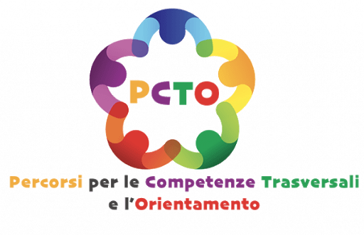
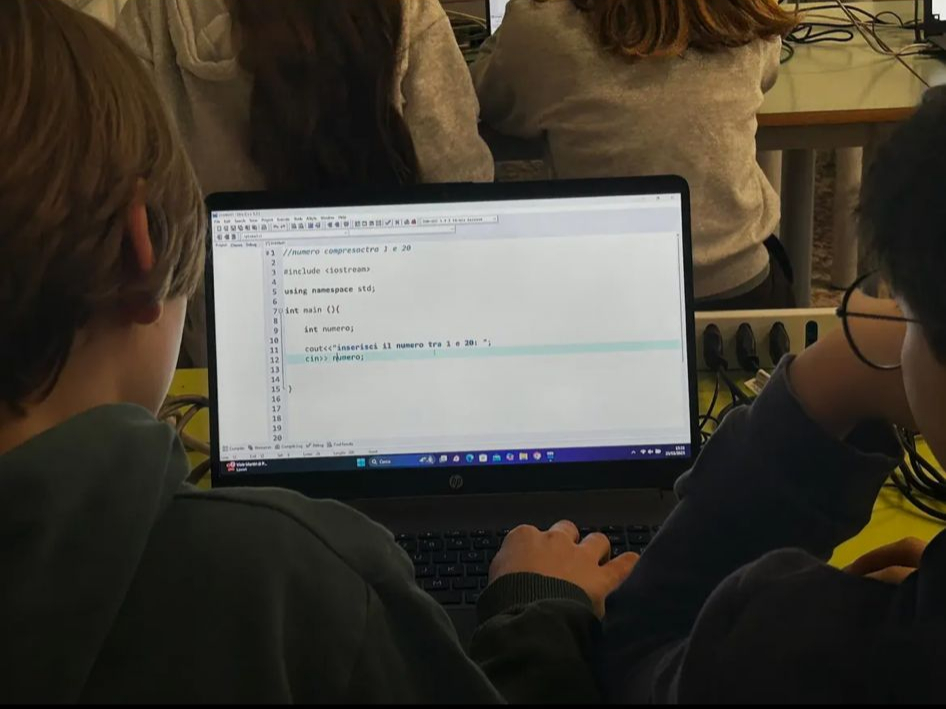
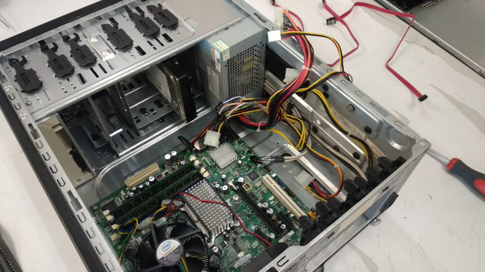
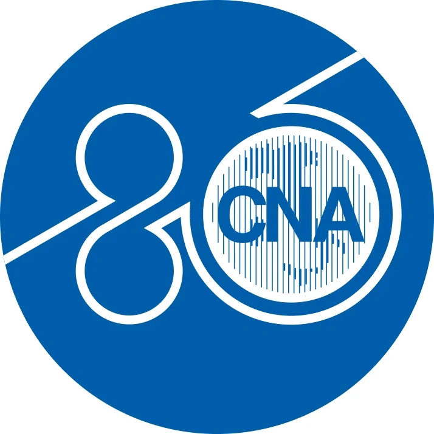
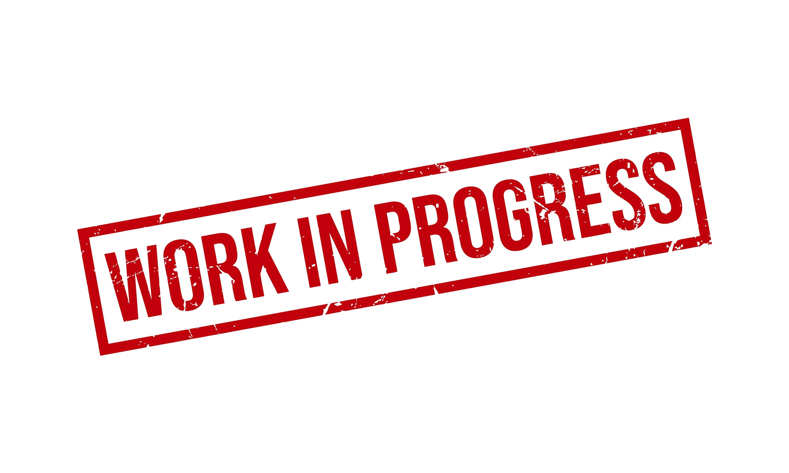

Classe Terza

ore impiegate: 2
UST:Instroduzione al PCTO

ore impiegate: 2
Sicurezza

ore impiegate: 10
BusConnect

ore impiegate: 4
frequento il quarto anno dell’Istituto Tecnico con indirizzo Informatica e Telecomunicazioni. In questo portfolio ho raccolto progetti, attività ed esperienze svolti nel PCTO del mio percorso scolastico e le competenze sviluppate nel campo dell’informatica.







Descrizione del progetto qui...